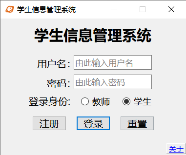
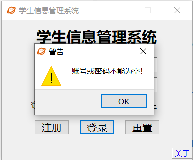
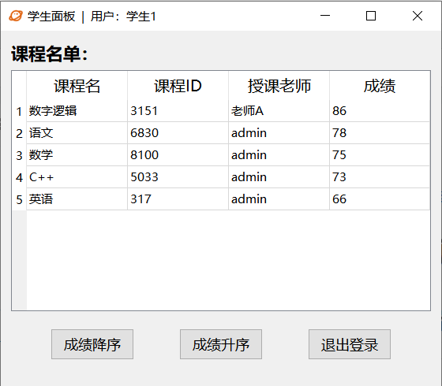
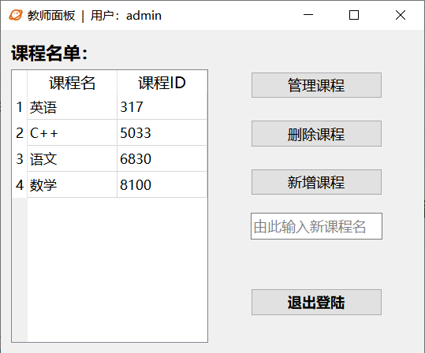
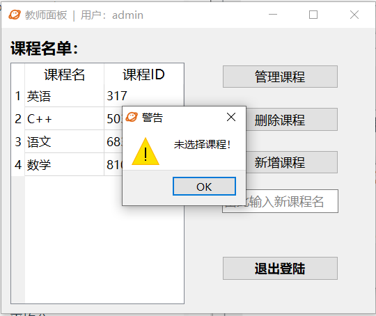
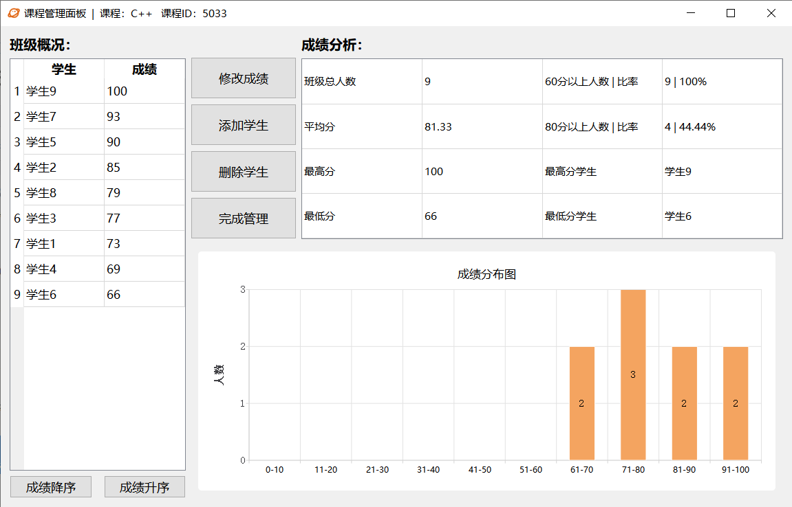
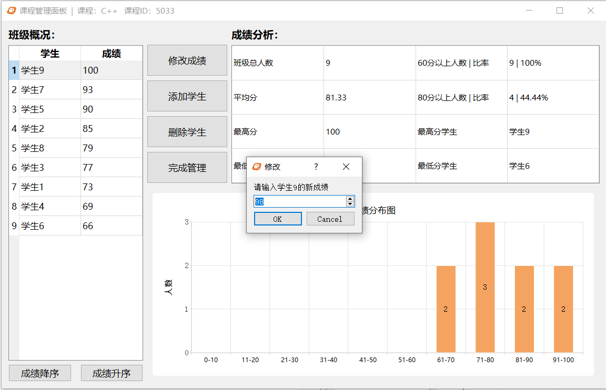
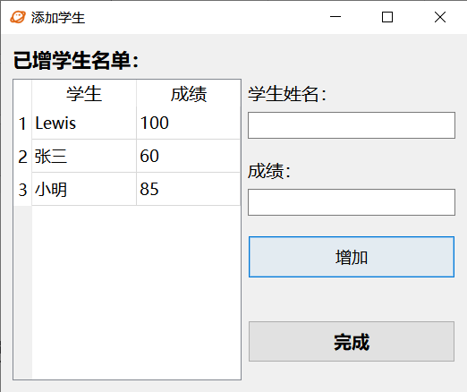
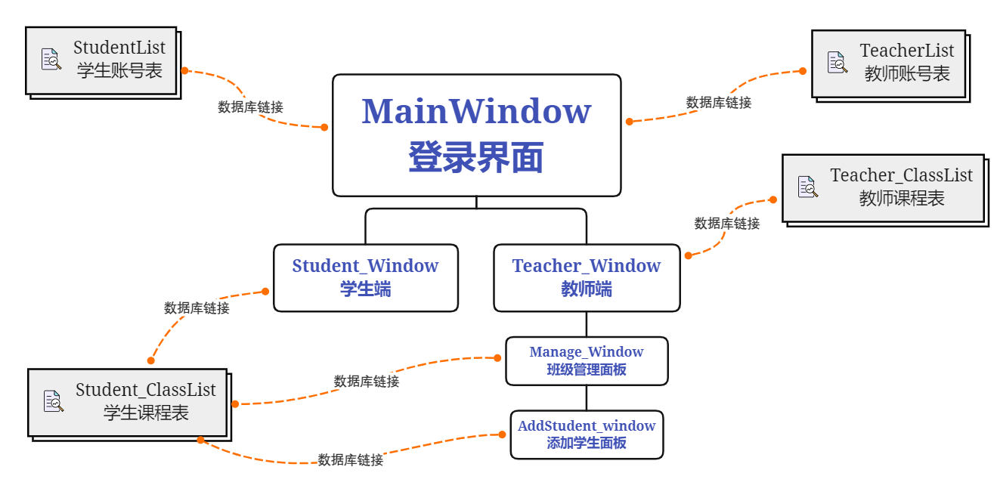

基于Qt开发，数据库为SQLite。
项目已开源，点击此处查看
测试账号
教师端
学生端
| 用户名 |
密码 |
| 学生1 |
111 |
| 学生2 |
222 |
| 学生3 |
333 |
| 学生4 |
444 |
| 学生5 |
555 |
| 学生6 |
666 |
| 学生7 |
777 |
| 学生8 |
888 |
| 学生9 |
999 |
程序功能
登录端


- 用户密码输入为空检测
- enter快捷键登录
- 右下角关于文档 获取帮助
学生端

- 所有课程成绩查询
- 成绩降序/升序排列
- 窗口自适应大小
教师端
主面板


- 窗口自适应大小
- 支持新增多班级的同名课程
- 双击列表默认打开课程管理面板，新增课程名为空检测，课程选择检测
- 删除课程
管理面板


- 班级成绩排名升序/降序排列
- 窗口自适应大小
- 班级成绩分析：及格/优秀 人数、比率；最高分、最低分 的分值、学生名单；平均分
- 成绩分布图
- 修改学生成绩，成绩区间0-100，可使用方向键快捷更改
- 删除学生
新增学生面板

- 窗口大小自适应
- 批量增加学生
- enter快捷键增加
- 学生姓名、成绩输入为空检测
项目框架
程序界面关系

工程管理文件 <配置项>
StuInfo_Manage_System.pro
项目所用模块：
1
| QT += core gui sql charts
|
项目所用头文件：
1
2
3
4
5
6
7
| HEADERS += \
addstudent_window.h \
global.h \
mainwindow.h \
manage_window.h \
student_window.h \
teacher_window.h
|
项目所用源文件：
1
2
3
4
5
6
7
8
| SOURCES += \
addstudent_window.cpp \
global.cpp \
main.cpp \
mainwindow.cpp \
manage_window.cpp \
student_window.cpp \
teacher_window.cpp
|
项目所用ui文件：
1
2
3
4
5
6
| FORMS += \
addstudent_window.ui \
mainwindow.ui \
manage_window.ui \
student_window.ui \
teacher_window.ui
|
项目所用资源文件
1
2
| RESOURCES += \
setIcon.qrc
|
具体结构
类
global
数据成员
函数成员
1
2
| void Global::ins_db();
static QSqlDatabase getdb();
|
mainwindow
数据成员
1
2
3
4
| Teacher_Window *w1;
Student_Window *w2;
QString Username_this;
QString Password_this;
|
槽：
1
2
3
4
| void Login_Button_clicked();
void Signup_Button_clicked();
void Reset_Button_clicked();
void Input_Judge();
|
teacher_window
数据成员：
1
2
3
| QWidget* top;
QString classid_selected = "";
QString class_selected = "";
|
函数成员：
1
2
| void reload_ClassList();
void setupClassList();
|
槽：
1
2
3
4
5
6
| void getItem(int row, int column);
void Select_Judge();
void manage_button_clicked();
void delete_button_clicked();
void add_button_clicked();
void exit_button_clicked();
|
manage_window
数据成员：
1
2
3
4
5
6
7
8
9
10
11
12
13
14
15
16
17
18
19
| QWidget* top;
int distribution[10];
QString student_selected;
QString classid_this;
QString classname_this;
int grade;
int highest_score;
int lowest_score;
float average_score;
int total;
int pass_num;
int above_num;
QString highest_stu = "-";
QString lowest_stu = "-";
bool order_mode = true;
AddStudent_window* w1;
QChartView *chartView;
QChart *chart;
QValueAxis *axisY;
|
函数成员：
1
2
3
| void setupList();
void reload_analysis();
void CreateChart();
|
信号：
此处定义一个信号供setupList()使用
不直接在setupList()中调用该函数，是因为reload_StudentList()中会通过sender()来获取发射信号来调用自己的对象名，以实现成绩升序、降序排列（注意，reload_StudentList()是槽函数），如果直接在setupList()中调用reload_StudentList()，sender()会报错。
槽：
1
2
3
4
5
6
7
8
| void exit_button_clicked();
void reset_button_clicked();
void reload_StudentList();
void reloadChart();
void getItem(int row, int column);
void delete_button_clicked();
void add_button_clicked();
void Select_Judge();
|
addstudent_window
数据成员：
1
2
| QWidget* top;
int addlist_rows = 0;
|
信号：
1
2
| void reloadStudentList_signal();
void reloadChart_signal();
|
槽：
1
2
| void add_student();
void backTotop();
|
student_window
数据成员：
函数成员：
信号：
槽：
1
2
| void load_ClassList();
void exit_button_clicked();
|
具体实现
建议直接读相关函数的具体实现代码,需注意部分已注释，此处不在赘述。